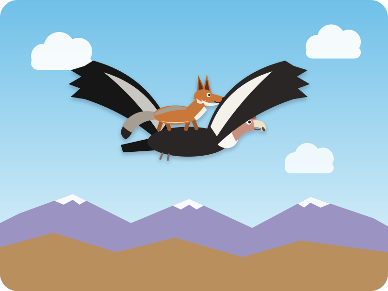
A folk tale from the Andes (Peru & Bolivia)
The Fox and the Sky Feast
"Story, story — are your ears open?" Kai: "Open!"
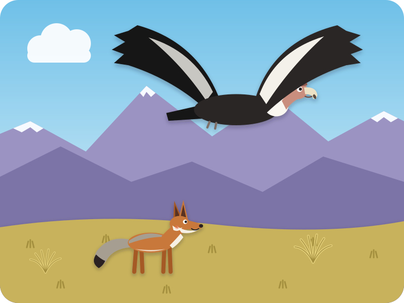
High in the Andes mountains, where the peaks wear snowy hats, lived a fox called Atoq.
Atoq had tall pointy ears and a long bushy tail. And Atoq was always hungry. Kai rubs his tummy
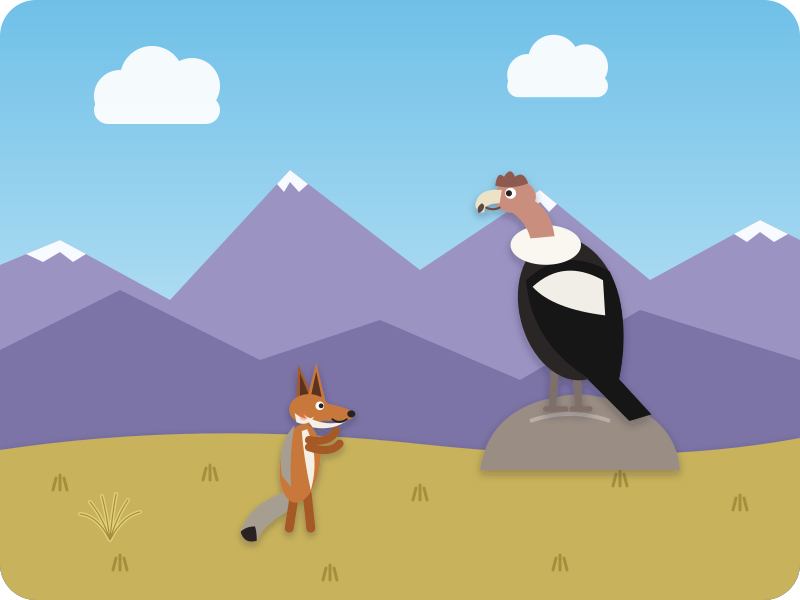
One day the great Condor landed on a rock. "I'm flying up to a feast in the sky," he said.
"Oh, take me too!" begged Atoq. "I'll be good. I'll be polite. I promise!"
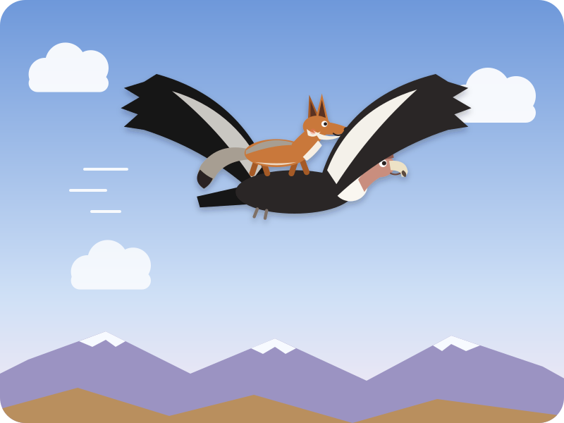
So Atoq climbed onto Condor's big back, and off they flew, past the hills, past the snowy peaks, right up into the clouds.
"Up, up, up we go!" Kai lifts his arms up high
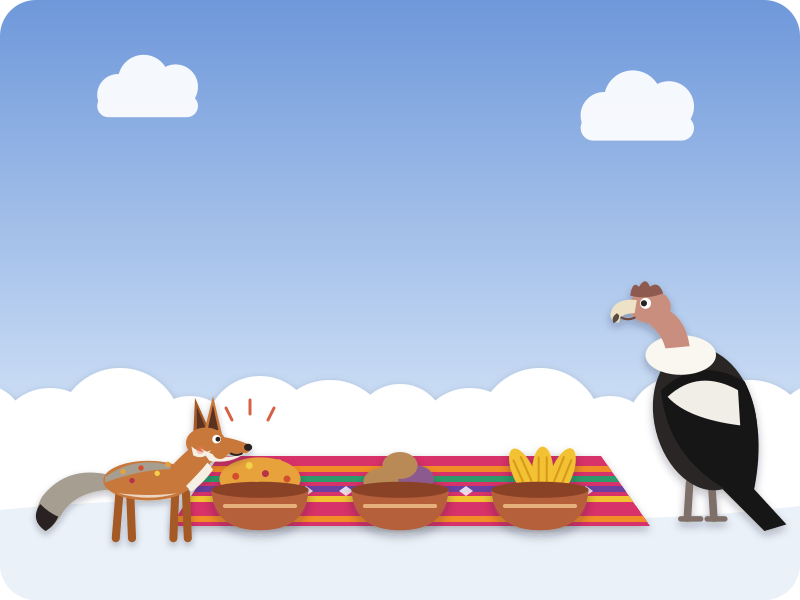
Up on the clouds was a feast: potatoes, corn, and heaps and heaps of tiny quinoa seeds.
Atoq didn't wait. He didn't say please. Gobble, gobble, GOBBLE! Kai gobbles He even stuffed seeds and little potatoes in his cheeks and his fur, "for later."
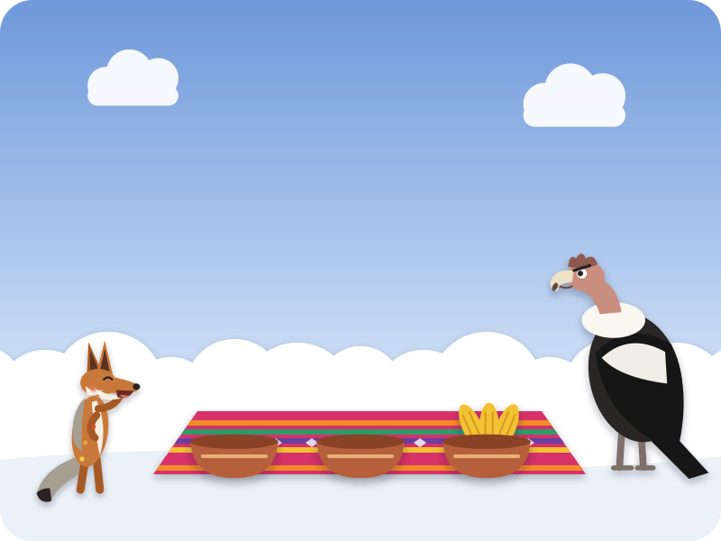
"I'm the cleverest! I'm the fastest! I'm the BEST!" boasted Atoq, with his mouth full.
"Atoq," said Condor, "you promised to be polite." But Atoq just kept on gobbling and boasting.
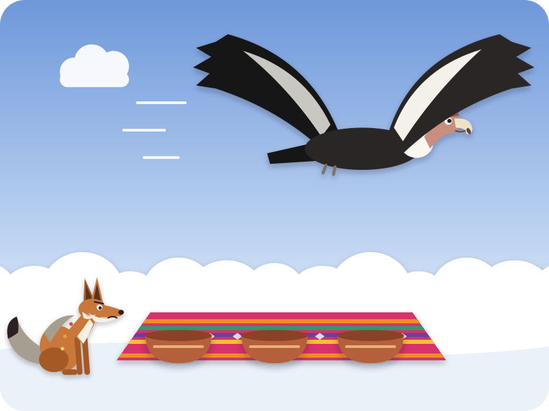
At last Condor was fed up. Off he flew, home to the mountains. Whoosh! And he didn't take Atoq.
"Oh no," said Atoq. "How will I get down?"
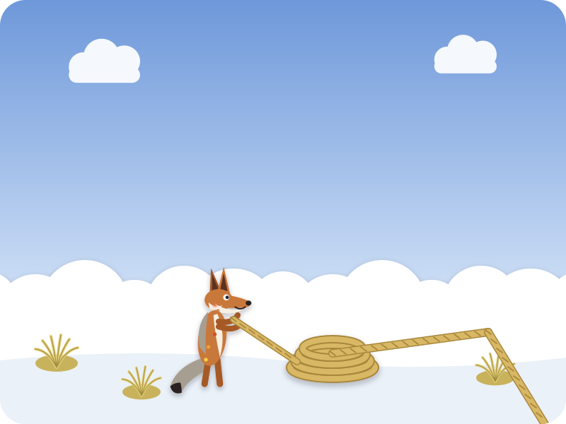
Atoq pulled up the long sky grass and twisted it into a rope: a long, long, LONG rope.
He tied it to the cloud and began to climb down. "Down, down, down the rope I go!" Kai climbs, hand over hand
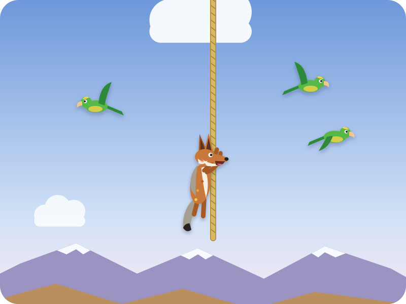
"Down, down, down the rope I go!" Along came some little green parrots. "Squawk!" Kai: "Squawk!"
"Hey, hook-nose! Hey, potato-tongue!" shouted rude Atoq.
"Squawk! Be polite!" said the parrots.
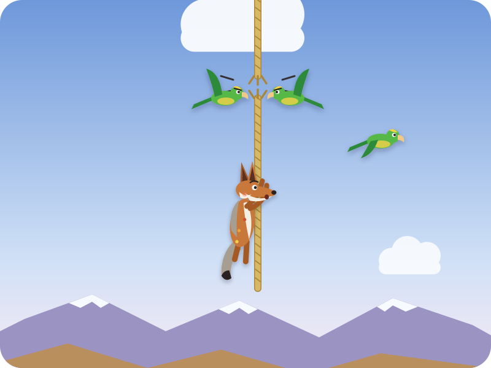
But Atoq shouted rude names again. So the parrots pecked the rope.
Peck, peck, peck… Kai pecks with his fingers SNAP!
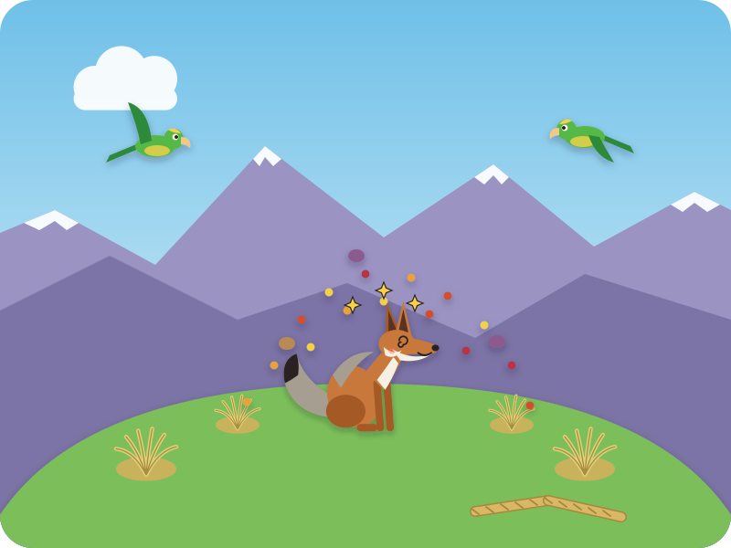
Down, down, down tumbled Atoq… and landed with a soft BUMP on a big, grassy hill.
POOF! All the seeds and little potatoes flew out of his cheeks and his fur. Atoq sat up and blinked. A bit dizzy, but not hurt at all.
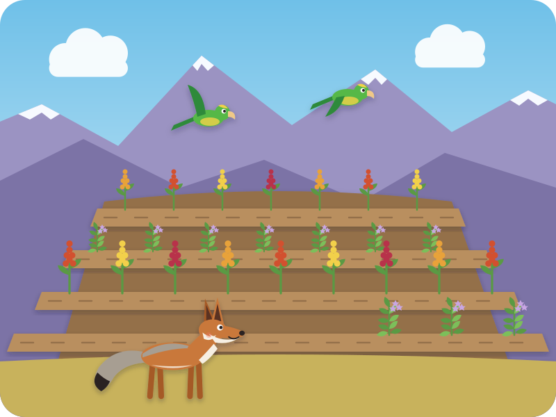
The seeds rolled all over the mountainsides. And they grew… and grew… and grew.
And that, people say, is why quinoa and potatoes grow high up in the Andes today.
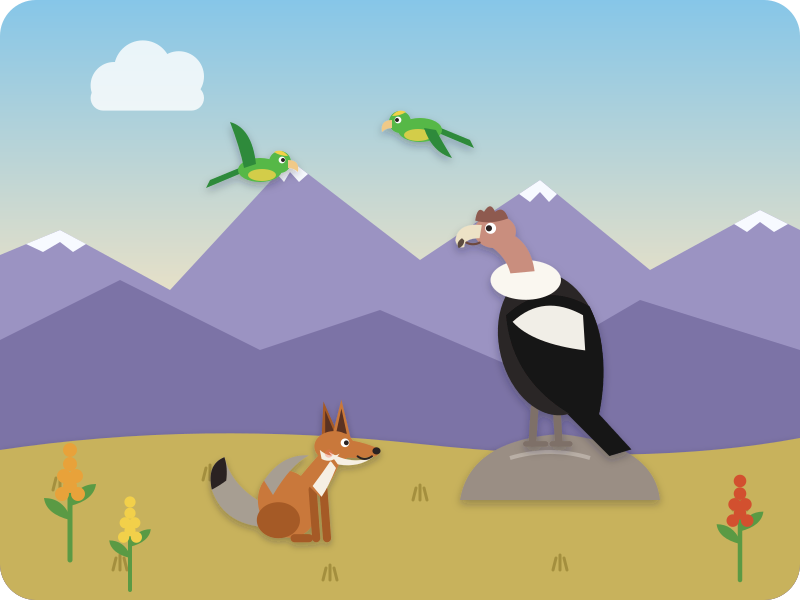
And Atoq? He learned to say please and thank you.
"Thank you, Condor! Sorry, parrots!" "Squawk!" said the parrots. Kai: "Squawk!"
The End
"Snip, snap, snout — this tale's told out."
Swipe back to read it again
Driving? Tell it without the page · six beats
The picture book is for home, bedtime, or a passenger. In the car, tell it from memory — bold is Kai's part.
- Atoq the fox is always hungry. The great Condor is flying to a feast in the sky, and Atoq begs, "Take me! I'll be polite, I promise!"
- Atoq rides on Condor's back, past the snowy peaks: "Up, up, up we go!"
- At the sky feast Atoq doesn't say please. Gobble, gobble, GOBBLE! He stuffs seeds in his cheeks and boasts, "I'm the BEST!"
- Condor is fed up and flies home without him, so Atoq twists sky grass into a long rope: "Down, down, down the rope I go!"
- Little green parrots fly by, "Squawk!", and Atoq calls them rude names, so they peck, peck, peck the rope: SNAP!
- Atoq lands with a soft BUMP on a grassy hill, the seeds fly out and grow into the quinoa and potatoes on the mountains, and Atoq learns to say "Thank you, Condor! Sorry, parrots!" "Squawk!"
After the story · car-friendly wondering
"What could Atoq have said at the feast, instead of gobbling it all up?"
"Why did the parrots peck the rope?"
"If you could ride on a condor's back, where would you fly?"
Where this story comes from
The fox who went to a feast in the sky is one of the best-known animal tales of the Andes. It is told in Quechua, Aymara and Spanish, and folklorists have recorded it from the highlands of central and southern Peru through Bolivia to northern Chile and northwest Argentina. There are many versions, and they differ a lot. One carefully recorded telling is in César Itier's study "El zorro del cielo: un mito sobre el origen de las plantas cultivadas y los intercambios con el mundo sobrenatural", in the Bulletin de l'Institut Français d'Études Andines (vol. 26, no. 3, 1997). Itier transcribed and translated two Quechua versions from the province of Quispicanchis, near Cusco in Peru. We read Itier's synthesis of his two versions, reprinted by the scholar Lydia Fossa in the journal Estudios Atacameños (no. 62, 2019). In it, the Condor agrees to take the Fox to a three-day feast in the sky, as long as he promises to behave. The Fox runs about instead, and when the feast ends the Condor leaves without him. The Fox makes a long rope of plant fibre and climbs down it. A parrot flies by, and the Fox shouts insults at it ("hook-nose! potato-tongue! scissor-legs!"). He promises to stop, then does it again, and the parrot cuts the rope. As he falls, the Fox calls to the people below to spread out a thick blanket, but they don't. In the old telling he lands hard and bursts open. In some versions the seeds he ate in the sky scatter over the earth and become the crops people grow, which is why Itier calls it a story about where cultivated plants came from. This retelling is our own, for a 4-year-old. We left out a long opening episode that isn't meant for small children. The Fox's rude names and the parrot's warning come from Itier's version. We gave him a flock of parrots instead of one, and made the rope from sky grass (Fossa's own summary calls it straw). The seeds tucked in his fur "for later" are our idea. The biggest change is the ending: our Fox lands with a soft bump on a grassy hill, isn't hurt at all, and learns to say sorry. The feast itself is ours too: in Itier's telling the Fox waits under the condors' table gnawing their bones, while our potatoes, corn and quinoa and the striped cloth are picture-book choices. Atoq is simply the Quechua word for "fox", and Itier's tellers call him by other names too. The famous Huarochirí Manuscript, written in Quechua around 1600, has its own pair of talking foxes, but we haven't found this sky-feast story in it, so we don't claim a link.